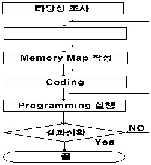
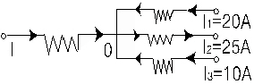
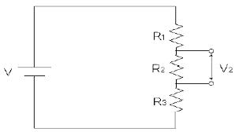

정보기기운용기능사 (2004-02-01 기출문제)
1과목: 전산 기초 이론
1. 사용소자에 따라 컴퓨터의 세대를 구분한다면 집적회로를 채용한 세대는?
- 제 3세대
- 제 4세대
- 제 1세대
- 제 2세대
(정답률: 87%)

2. 다음은 프로그램을 작성하는 순서도이다. □ 안에 알맞은 것은?

- 입출력 설계
- 프로그램 교정
- 프로그램 작성
- 결과분석
(정답률: 79%)
3. 자료의 전송이 직접 이루어지지 않는 장치는?
- 입력장치
- 기억장치
- 제어장치
- 연산장치
(정답률: 46%)
4. 원시 프로그램(SOURCE PROGRAM)이란?
- 로더(Loader)에 의해 실행 가능한 것
- 번역용 프로세서에 의해 생성된 것
- 사용자가 작성한 컴파일러 언어로 된 것
- 기계가 이해할 수 있는 기계어로 된 것
(정답률: 57%)
5. 2진법 10100101을 16진법으로 고치면?
- A4
- B4
- A5
- B5
(정답률: 76%)
6. 다음 중에서 NOT회로를 가장 잘 설명한 것은?
- 다수의 입력과 한개의 출력을 갖는다.
- 입력과 출력이 정반대가 된다.
- 입력과 출력 신호가 같다.
- NOR와 동일한 회로이다.
(정답률: 85%)
7. 컴퓨터 주변장치에 속하지 않는 것은?
- 카드리더
- 레지스터 뱅크
- 라인프린터
- 자기디스크 장치
(정답률: 56%)
8. 인간의 정신노동을 대신할 수 있는 전자계산기의 대표적인 기능이 아닌것은?
- 전달기능
- 기억기능
- 제어기능
- 연산기능
(정답률: 64%)
9. 다음 입·출력 장치중 하드 - 카피(hard - copy)라 불리우는 것은?
- 음극선관(CRT)
- 복사기
- 콘솔(console)
- 라인프린터(Line Printer)
(정답률: 57%)
10. A · (A · B + C)의 간략화는?
- A + B + C
- A · (B + C)
- B · (A + C)
- C · (A + B)
(정답률: 86%)
2과목: 정보 기기 운용
11. 그림에서 0점을 향하는 전류를 (+), 그 반대를 (-)로 할 때 전류 I(A)는?

- -5
- -55
- +5
- +55
(정답률: 51%)
12. 팩시밀리(Facsimile)의 신호를 받을 때 송신측의 송신속도와 수신측의 기록속도를 일치시키는 것은?
- 변조
- 동기
- 주사
- 복조
(정답률: 61%)
13. 컴퓨터 바이러스의 피해를 예방하기 위한 일반적인 예방 방법 중 틀리는 것은?
- 새로운 프로그램 사용시 외관검사를 한다.
- 컴퓨터 부팅시 하드디스크에서 한다.
- 시스템의 속성을 읽기 전용으로 한다.
- 쓰기방지 탭을 사용한다.
(정답률: 63%)
14. 3[V]의 건전지 15개를 병렬로 연결하면 합성전압은 얼마인가?
- 9[V]
- 15[V]
- 3[V]
- 45[V]
(정답률: 63%)
15. 워드프로세서 전용기는 전원을 ON함과 동시에 워드프로세서 프로그램이 작동한다. 어느 기억장치에서 읽어 들이는가?
- ROM
- RAM
- CPU
- Floppy Disk
(정답률: 66%)
16. 시간이 변함에 따라 크기와 방향이 주기적으로 변하는 전압, 전류를 무엇이라 하는가?
- 직류
- 교류
- 변류
- 맥류
(정답률: 73%)
17. 컴퓨터에서 프롬프트가 A일 때 C 디스크의 화일 목록을 보려 한다. 이때 사용해야 할 명령형식으로 맞는 것은?
- dir C:
- dir/p
- C:
- dir/w
(정답률: 81%)
18. 다기능 전화 서비스 중 전화를 걸때 송.수화기를 들지 않고 다이얼하여 상대방이 응답한 후 송.수화기를 들어 통화할 수 있게 하는 기능은?
- 자동다이얼
- 음성호출
- 온훅 다이얼
- 재다이얼
(정답률: 67%)
19. 다음 중 컴퓨터와 병렬로 연결하여 데이터를 병렬로 전송하는 것은?
- 프린터(Printer)
- 텔렉스(telex)
- 팩시밀리(Facsimile)
- 모뎀(Modem)
(정답률: 51%)
20. 다음 중 변복조기 기능과 멀티 플렉서가 혼합된 형태의 신호변환기를 무엇이라 하는가?
- 멀티포트모뎀
- 전용선모뎀
- 다이얼업모뎀
- 멀티포인트모뎀
(정답률: 63%)
21. 다음 그림과 같은 회로에서 V=10[V], R1=R2=R3=100[Ω]일때 V2는 약 몇 [V]인가?

- 1
- 3.3
- 5.5
- 10
(정답률: 52%)
22. 정보단말기의 구성 요소가 아닌 것은?
- 변·복조기
- 회선제어부
- 회선접속부
- 입력장치부
(정답률: 49%)
23. OA(Office Automation)기기와 관계 적은 것은?
- 팩시밀리
- 컴퓨터
- CAM
- 복사기
(정답률: 73%)
24. 바이러스의 감염 증상과 거리가 먼 것은?
- 하드웨어인 프린터가 손상된다.
- 파일을 찾지 못하거나 디스크를 Format한다.
- 사용자가 명령하지 않은 메시지가 출력된다.
- 컴퓨터 부팅이 안되고 부팅 시간이 오래 걸린다.
(정답률: 77%)
25. 문서를 편집할 때 어떤 기호나 특수문자들이 행의 처음이나, 행의 마지막에 올 수 없는 경우를 무엇이라 하는가?
- 절차처리
- 들여쓰기
- 레이아웃
- 금칙처리
(정답률: 62%)
26. 연산 장치와 제어 장치가 모두 가지고 있는 전용 기억장치를 무엇이라 하는가?
- Decoder
- Register
- Encoder
- Accumulator
(정답률: 66%)
27. 정보 기기의 조작 관리에 있어서 허브 중에서 가장 단순한 기능을 가진 것은?
- 더미 허브
- 지능형 허브
- 축적형 허브
- 스위치 허브
(정답률: 51%)
28. 다음중 전산실 및 통신센터의 환경 조건에서 가장 적합한 습도는?
- 10 ～ 30%
- 30 ～ 40%
- 40 ～ 70%
- 70 ～ 100%
(정답률: 59%)
29. 사진이나 그림 등의 이미지 데이터를 디지털 신호로 변환하여 그래픽 형태로 읽어 컴퓨터에 전달하는 입력장치는?
- CAD
- 스캐너
- 태블릿
- 라이트 펜
(정답률: 77%)
30. 5Ω의 저항에 20V의 전압을 가할 때 저항에서 소비되는 전력은?
- 20W
- 40W
- 60W
- 80W
(정답률: 47%)
3과목: 정보 통신 일반
31. 신호파형 중 주파수를 변환시키는 변조방식은 ?
- PCM
- PM
- AM
- FM
(정답률: 64%)
32. 디지탈신호를 아날로그 신호로, 아날로그 신호를 디지털신호로 바꾸어 주는 장치는?
- 교환기
- 다중화기
- 변복조기
- 집중화기
(정답률: 81%)
33. 데이터 통신망에 이용되는 광섬유 케이블의 광신호 전송(도파)원리는?
- 빛의 흡수현상
- 빛의 반사현상
- 빛의 유도현상
- 빛의 분산현상
(정답률: 81%)
34. 다음 중 전용회선에 관한 설명으로 적합하지 않은 것은?
- 언제나 통신이 가능하도록 회선이 구성되어 있다.
- 사용구간에 따라 장기전용과 단기전용으로 구분한다.
- 많은 양의 데이터 전송에 효율적이다.
- 송신측과 수신측간에 통신회선이 고정되어 있다.
(정답률: 54%)
35. 인터넷(Internet)의 설명으로 적합하지 않은 것은?
- 일본에서 시작되어 전세계적으로 확산되었다.
- 압축프로그램이 많이 이용된다.
- 프로토콜은 TCP/IP가 주로 이용된다.
- 전용선 또는 모뎀을 이용한 접속방법이 있다.
(정답률: 78%)
36. 뉴미디어를 크게 분류하는데 해당되지 않는 것은?
- 패키지계 뉴미디어
- 방송계 뉴미디어
- 전산계 뉴미디어
- 통신계 뉴미디어
(정답률: 50%)
37. 무선 LAN 시스템에 대한 설명으로 적합하지 않은 것은?
- SERVER에서 무선접속장치까지는 유선망이 연결되어야 한다.
- 실내에서는 30～50m, 밖에서는 200m 정도 서비스가 가능하다.
- 구성장비로는 무선접속정치, 무선 LAN 카드, 운용소프트웨어가 필요하다.
- 장거리 무선 이동통신 시스템이다.
(정답률: 65%)
38. 회선망 구성에 있어서 10개의 스테이션(국)을 전부 망형 회선망으로 구성하려면 몇 회선이 필요한가?
- 45회선
- 65회선
- 85회선
- 25회선
(정답률: 64%)
39. 데이터통신에 의한 처리 형태로 가장 적합한 것은?
- 온-라인처리
- 오프-라인 리얼타임처리
- 오프-라인처리
- 온-라인 리얼타임처리
(정답률: 71%)
40. 송.수신측간 통신회선이 고정적이고, 언제나 통신이 가능하며 많은 양의 데이터전송에 효율적인 회선은?
- 구내회선
- 교환회선
- 전용회선
- 중계회선
(정답률: 72%)
41. 음성으로 응답 서비스하는 정보통신시스템은?
- ARS시스템
- DID시스템
- MAIL시스템
- EDI시스템
(정답률: 82%)
42. 데이터통신에서 에러 검출 또는 정정부호가 아닌 것은?
- ASCII code
- Hamming code
- Biquinary code
- CRC code
(정답률: 59%)
43. 통신망 중 방송망으로 이용되지 않는 것은?
- 메시지 교환망
- 근거리 통신망
- 패킷 라디오망
- 인공 위성망
(정답률: 69%)
44. 다음 통신선로 중에서 가장 멀리 중계기 없이 데이터를 전송할 수 있는 것은?
- 광섬유 케이블
- PVC 구내 케이블
- 쌍연 동선 케이블
- UTP 케이블
(정답률: 82%)
45. 컴퓨터 등과 정보통신설비를 이용하여 재화 또는 용역을 거래할 수 있도록 설정한 가상의 영업장은?
- 정보통신망
- 인터페이스
- 사이버 몰
- 홈 페이지
(정답률: 75%)
46. 다음중 정보(情報)의 개념과 가장 거리가 먼 것은?
- 데이터(data)
- 패턴(pattern)
- 인텔리전스(intelligence)
- 인포메이션(information)
(정답률: 63%)
47. 광섬유에 대한 특성을 잘못 설명한 것은?
- 크기가 작고 무게가 다른 전송매체에 비해 가볍다.
- 주파수대역폭이 넓다.
- 간섭, 충격성 잡음, 누화 등에 민감하다.
- 전송신호의 감쇠도가 낮다.
(정답률: 68%)
48. 주파수분할다중화 방식의 특징이 아닌 것은?
- 터미널이 한곳에 집중되어야 사용 가능하다.
- 가이드 밴드(Guide band)는 상호간섭을 방지하기 위해 필요하다.
- 주파수대역을 몇개의 작은 대역폭으로 나누어 이용한다.
- 각 부채널(sub channel)은 동시에 신호를 전송할 수있다.
(정답률: 64%)
49. 동기식 전송의 특성이라고 볼 수 없는 것은?
- 터미날에 버퍼기억 장치가 있다.
- 각 글자사이에 휴지시간이 있다.
- 한 블록으로 구성하는 글자사이에 휴지시간이 없다.
- 동기 신호는 데이터 블록의 앞쪽에 온다.
(정답률: 51%)
50. ITU-T에서 권고하는 프로토콜 X.25와 관계가 없는 것은?
- 데이터링크계층
- 물리계층
- 응용계층
- 네트워크계층
(정답률: 56%)
4과목: 정보 통신 업무 규정
51. 우리나라의 전기통신기본계획 수립은 누가 하는가?
- 전기통신사업자
- 한국통신사장
- 정보통신부장관
- 대통령
(정답률: 71%)
52. 정보통신 단말기로 부터 전화급회선으로 송출하는 전력은 몇 [㎽] 이하가 가장 적합한가?
- 1
- 10
- 2
- 5
(정답률: 37%)
53. 정보를 수집· 가공· 저장· 검색하기 위한 기기 및 소프트웨어의 조직화된 체제를 무엇이라 하는가?
- 정보시스템
- 정보통신망
- 정보통신설비
- 정보화사회
(정답률: 41%)
54. 전기통신역무에 관한 이용약관의 설명으로 적합하지 않은것은?
- 정보통신부장관에게 신고를 하여야 한다.
- 전기통신역무에 관한 요금 기타 이용조건을 말한다.
- 이용약관은 전기통신사업자가 정한다.
- 이용약관이 부당하여 변경시는 한국통신의 허가를 받아야 한다.
(정답률: 45%)
55. 전기통신설비는 무엇에 적합하도록 유지· 보수하여야 하는가?
- 정보통신부가 정하는 전기통신설비의 기술기준
- 대통령령이 정하는 전기통신사업법시행령
- 전기통신사업자의 이용약관에서 정하는 보전기준
- 기간통신사업자가 정하는 유지· 보수규정
(정답률: 49%)
56. 정보통신서비스 제공사업을 영위하는 사업자 및 그 종업원들이 준수하여야 할 사항으로 적합하지 않은 것은?
- 미풍양속을 해치지 않아야 한다.
- 정보화사회 조성을 위한 금융 지원을 하여야 한다.
- 국가의 안전을 위태롭게 하여서는 아니된다.
- 국가경제질서를 파괴하는 행위를 하지 않아야 한다.
(정답률: 75%)
57. 정보통신부장관은 통신사업자의 통신업무를 제한 또는 정지시킬 수가 있다. 이 제한 또는 정지한 업무를 정도에따라 수행시키고자 할 때, 다음 중 가장 먼저 소통하도록 명하는 것은 어느 관련 업무인가?
- 재해구조
- 국가안보
- 의료기관업무
- 국제연합업무
(정답률: 70%)
58. 통신사업자가 정보통신설비의 설치 및 보전 업무의 수행을 원할하게 하기 위한 특권이 아닌 것은?
- 장애물 등의 제거 요구권
- 안전.보호구역의 표지권
- 토지 등의 일시 사용권
- 교통 차도 및 인도 폐쇄권
(정답률: 58%)
59. 초고속정보통신역무에 관한 설명으로 가장 적합한 것은?
- 자연인 또는 법인이 특정 목적을 위하여 광 또는 전자식방식으로 처리하여 부호, 문자, 음성, 음향 및 영상 등으로 표현된 모든 종류의 자료 또는 지식을 제공하는 역무를 말한다.
- 정보를 생산, 유통 또는 활용하여 사회 각 분야의 활동을 가능하게 하는 것을 말한다.
- 정보의 수집, 가공, 저장, 검색, 송신, 수신 및 그 활용과 이에 관련된 기기, 기술, 역무 기타 정보화를 촉진하기 위한 활동과 수단을 말한다.
- 실시간으로 동영상 정보를 주고 받을수 있는 수준이상의 역무를 말한다.
(정답률: 52%)
60. 자기 또는 타인에게 이익을 주거나 타인에게 손해를 가할목적으로 전기통신설비에 의하여 공연히 허위 통신을 한자의 처벌은?
- 손해배상을 하여야 한다.
- 법령에 정한 징역 또는 벌금에 처한다.
- 경고처분을 받는다.
- 영원히 통신서비스를 받지 못한다.
(정답률: 79%)